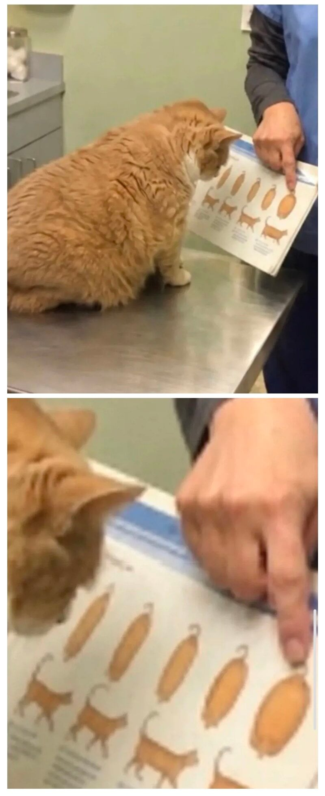
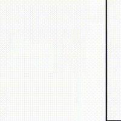
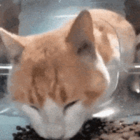

33 · 13 · 1 시간 전 · 원문

넌 지금 돼지냥이야
수집 당시 댓글 13개
마리괭이 · 2 시간 전
돼냥이
유아학교 · 2 시간 전

↳ 답글 · 순라면진한맛 · 1 시간 전
닉네임빈공간다채워넣기이이이이이이이이이 · 2 시간 전
"너 살찐거야"
RTXON · 1 시간 전
섹시한주임 · 1 시간 전
음식 치팅을 해버린
신창섭과50인의쌀숭이 · 1 시간 전

순라면진한맛 · 1 시간 전
스네크 · 1 시간 전
잘들어 넌 돼지야
컬러브 · 1 시간 전
"이젠 치팅데이도 없어"
나도댓글점달자 · 1 시간 전
ㅋㅋㅋㅋㅋㅋㅋㅋㅋㅋㅋㅋㅋㅋㅋ
레벨토끼 · 1 시간 전
이런거 쇼츠 있었는데 돼지라고 하니까 고양이 서럽게 우는거
두려워요 · 1 시간 전
돼지ㅠ그만좀 머거

돼냥이